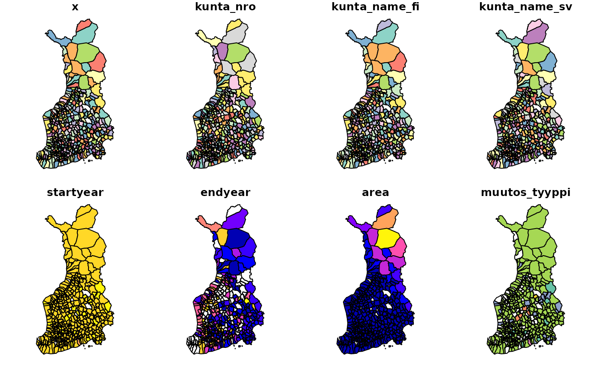
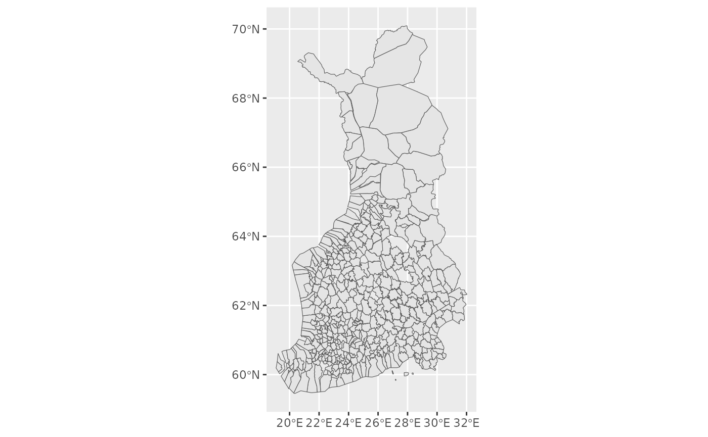

Finnish historical maps with sorvi R package
Pyry Kantanen
2026-02-17
Source:vignettes/articles/finnish-historical-maps.Rmd
finnish-historical-maps.RmdFinnish historical maps with sorvi
Introduction
Accessing high-quality shapefiles and other vectorized geospatial location boundaries for different administrative divisions is nowadays trivial as datasets are readily available through download services and APIs. Packages such as geofi/ and giscoR make it easy to draw maps in the case of Finland and European NUTS areas and visualize statistical data in the form of choropleth maps.
However, when it comes to historical boundaries such as Finnish municipality boundaries before the year 2013, drawing maps becomes harder. For example, the National Land Survey of Finland offers municipality-based boundaries only for the current year and Statistics Finland offers maps only from 2013 onwards. From 2005 to 2022 only, Finnish municipalities have undergone 79 merger processes with their number falling from 431 to 309, or approximately one-fourth. In time series data municipality mergers are taken into account by the Statistics Authorities, making it possible to see how current municipalities and their parts combined have developed in the past. In most cases, Statistics Finland uses the current municipality division as the basis of population statistics time series.
Previous work
In 2003-2012 FinnONTO project driven by the Semantic Computing Research Group (SeCo) started with the ambition of laying the foundations “for a national metadata, ontology, ontology service, and linked data framework in Finland”. As part of the project National Ontology Service ONKI was published in 2008, which was used to publish “interlinked, collaboratively created ontologies and vocabularies in a centralized way, with 150 organizations as registered users.
As part of the FinnONTO project, the Finnish Spatio-Temporal Ontology (SAPO) was created. SAPO is an “ontology time series of Finnish municipalities over the time interval 1865-2010” and as an ontology, it “represents knowledge about changes (e.g. merges, splits) in historical regions (e.g. cities, counties)”. The types of changes include (from Väätäinen & Kauppinen 2015, Finnish terms in parentheses):
- establishing a completely new municipality (perustaminen);
- abolishing a municipality (lakkauttaminen);
- splitting one municipality into two or more municipalities (jakaantuminen);
- merging two or more municipalities into a single municipality (yhdistyminen);
- changing the ownership of a part of a municipality to another (aluesiirto);
- changing the name of the municipality (nimenmuutos);
- ceding a municipality or part of a municipality to another sovereign state, effectively abolishing the municipality entity in the original country (alueluovutus);
- integrating (the opposite of ceding territory) a municipality from another sovereign state, effectively meaning that a new administrative area must be established in the receiving country (aluesaaminen);
- establishing new administrative area from the parts of two or more other areas (aluesiirtoperustaminen);
- dividing existing administrative area between two or more existing administrative areas (aluesiirtojakaantuminen);
- renting out certain area to the use of another sovereign state (aluevuokraus);
- ending the rental period of land area and returning it into sovereign rule (aluevuokrauksen loppuminen);
- formation, in the case of administrative areas (or settlements) that have gradually started to exist without any specific founding date (muodostuminen);
- demarcation, when areas are divided between two neighbouring administrative areas that didn’t previously have clearly defined borders (rajanveto).
In practice, all Finnish municipalities have a set establishment date. Most municipalities were established in 1865 with His Imperial Majesty’s Degree on Municipal Administration in the Countryside (more information in Wikipedia (in Finnish), degree AsK 4/1865 text in Wikisource (in Finnish)), that moved secular administration away from church parishes to newly established municipalities. Many municipalities have also changed names at some point, been split or merged, and had border changes with their neighbouring municipalities. Ceding or abolishing municipalities is mostly related to the situation after the Second World War when many Finnish municipalities in Karelia were ceded to the Soviet Union.
Since 2008, ONKI has been superseded by Finto, although it does not contain all the data that ONKI did. I have used data files (RDF/Turtle files) downloaded from ONKI as a starting point and created datasets that feel more natural for an R user to use, using rdflib R package.
Drawing historical maps
Historical maps can be drawn simply by using the
get_municipalities() function.
library(sorvi)
#> sorvi - Tools for Finnish Open Data.
#> Copyright (C) 2010-2023 Leo Lahti, Juuso Parkkinen, Joona Lehtomaki and Pyry Kantanen
#>
#> http://github.com/ropengov/sorvi
#>
#> Hard sciences are successful because they deal with soft problems;
#> soft sciences are struggling because they deal with hard problems.
#> - Von Foerster
x <- get_municipalities(year = 1912)
head(x)
#> Simple feature collection with 6 features and 8 fields
#> Geometry type: POLYGON
#> Dimension: XY
#> Bounding box: xmin: 20.88007 ymin: 60.87673 xmax: 24.76896 ymax: 66.30193
#> Geodetic CRS: ISN93
#> # A tibble: 6 × 9
#> # Groups: kunta_nro [6]
#> x kunta_nro kunta_name_fi kunta_name_sv startyear endyear area
#> <chr> <chr> <chr> <chr> <dbl> <int> <dbl>
#> 1 http://www.yso.… 001 Ahlainen Ahlainen 1908 1971 185
#> 2 http://www.yso.… 003 Akaa Akaa 1895 1931 131
#> 3 http://www.yso.… 004 Alahärmä Alahärmä 1867 2008 351.
#> 4 http://www.yso.… 005 Alajärvi Alajärvi 1868 2008 737.
#> 5 http://www.yso.… 006 Alastaro Alastaro 1869 2008 257.
#> 6 http://www.yso.… 007 Alatornio Nedertorneå 1865 1956 868
#> # ℹ 2 more variables: muutos_tyyppi <chr>, geometry <POLYGON [°]>The municipalities can be plotted with base R functions or with ggplot2.
plot(x)

For more interesting mapping examples, I recommend readers to
acquaintance themselves e.g. with the geofi packages
articles on making
maps, joining
attribute data with geospatial objects or spatial
data analysis. The sorvi::kunnat1865_2021 dataset in
sorvi consists of sf objects which are analogous to the more recent
objects downloaded by the geofi package.
Future work
As can be seen from the visualizations above, there are some gaps in the data. For example, the dataset metadata for the year 1912 shows that it has 49 empty geometries:
Simple feature collection with 520 features and 8 fields (with 49 geometries empty)
Geometry type: GEOMETRY
Dimension: XY
Bounding box: xmin: 19.08318 ymin: 59.45416 xmax: 32.019 ymax: 70.09204
Geodetic CRS: ISN93
# A tibble: 520 × 9
# Groups: kunta_nro [520]In addition, there are some inconsistencies with the geometries compared to newer datasets downloaded from the National Land Survey of Finland / Statistics Finland API. For example, municipalities that are surrounded by rural municipalities (“maalaiskunta”) can sometimes be left under the rural municipality polygon if the rural municipality polygon is too simplified and has no holes. Similarly, some municipality enclaves or exclaves might not be properly represented as the borders of the municipalities are rather simplified. However, it must be noted that small-scale information like this is not essential for drawing choropleth maps and visualizing the broad strokes of municipality administration development in Finland.
Additionally, having access to historical maps does not mean that much else could be done with them without having access to some other type of data. Statistics Finland has published data on the Finnish population from 1750 onwards in their statistical database that can be accessed e.g. with the pxweb R package, but regrettably, this data is only at a national level. Publications such as Suomen Tilastollinen Vuosikirja (Finnish Statistical Yearbook, example from 1918) might be interesting sources of information if someone has the time and resources to digitize tables from there. Utilizing HisKi database that contains digitized parish record data would also be interesting, although the oldest parish records are much older than the oldest municipalities. This would again prompt the need to map out parish district borders if such well-defined borders ever existed.
It is therefore evident that much work is still to be done. Users are welcome to fill data gaps or provide better polygons! Opening an issue in GitHub or directly making a pull request is very much appreciated. Suggestions regarding the best possible practices and solutions for data and metadata storage are also welcome.
Attribution
Raw data downloaded from ONKI.fi website on 04 Aug 2022: http://onki.fi/en/browser/overview/sapo
Data attribution: FinnONTO Consortium: https://seco.cs.aalto.fi/projects/finnonto/
References
- Kauppinen, Tomi & Väätäinen, Jari. 2015. SAPOn nykytila, ylläpito ja laajennusmahdollisuudet. Raportteja ja selvityksiä 1/2015, Kansalliskirjasto. URN: https://urn.fi/URN:ISBN:978-951-51-1422-8
- Tilastokeskus. 1999. Väestötilastoja 250 vuotta: Katsaus väestötilaston historiaan vuosina 1749–1999. Väestö 1999:8, SVT. URN: https://urn.fi/URN:NBN:fi-fe2023013112911